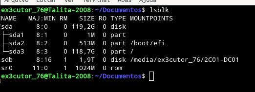
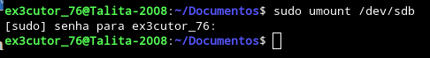
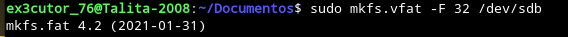
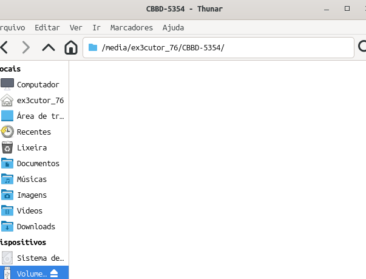
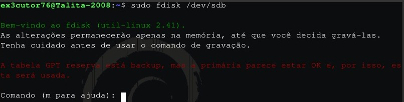
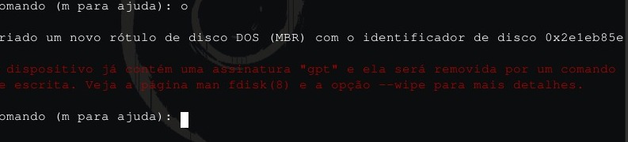
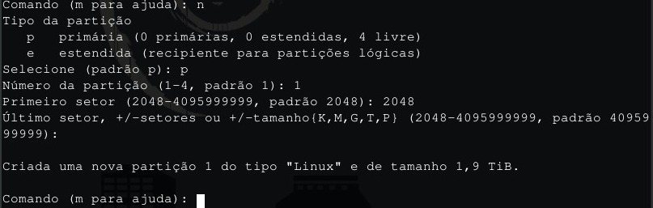
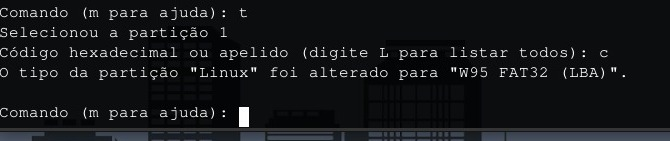
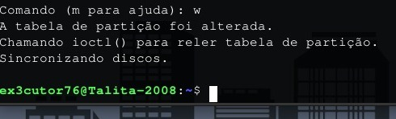

Como formatar um pen drive no terminal:
Aqui é bem fácil até e vou te ensinar isso porque é bem mais seguro do que instalar um programa no Linux
que pode acabar queimando seu pen drive ou bichando ele.
Comando importante:
lsblk -l:
Com esse comando ele irá listar discos e partições do seu computador.
Se quiser ver mais detalhadamente use: lsblk -f
Como formatar um pen drive pelo terminal?:
Uma coisa bem importante, então recomendo que preste bem atenção:
Primeiro de tudo coloque o seu pen drive na USB.

Como podem ver neste pen drive para testes coloquei 3 pastas completamente vazias, para o teste
e agora vamos formatar este pen drive.
Agora no terminal para listar os drivers digite: lsblk
Agora que listamos os drivers, como vamos saber qual é o pen driver? Simples, no meu caso por exemplo
é o sdb, mas as vezes vem números nesse "sdb", então coloque com forme for no seu (Se caso ter número no sdb coloque como exemplo: sdb1).
Agora o próximo passo vai ser desmontar com o comando: sudo umount /dev/sdb
Bem agora que desmontamos o pen driver é hora de formatar.
Agora nesse passo final existem diversos (Sem ser o GPT) tipos de formatação sendo eles:
FAT32: Melhor para dispositivos pequenos e para compartilhamento entre diferentes sistemas operacionais.
NTFS: Ideal para sistemas Windows, oferecendo segurança e recursos avançados, entretanto não é compátivel com Linux e MacOS
EXT4: Melhor para sistemas Linux, com alta performance e recursos avançados, mas dificil de usar em outros sistemas operacionais.
E bem agora que você conhece essas diferenças, vamos formatar para FAT32 usando: sudo mkfs.vfat -F 32 /dev/sdb
E pronto formatamos nosso pen driver para FAT32.
Resulto:

Alguns outros comandos da formatação:
FAT32: sudo mkfs.vfat -F 32 /dev/sdb
NTFS: sudo mkfs.ntfs -f /dev/sdb
EXT4: sudo mkfs.ext4 /dev/sdb
Atualização 19/01/2026:
Bem você provavelmente foi formatar deste jeito que ensinei só que veio de forma errada certo?
Ou provavelmente deu erro no seu e bem nessa época que ensinei isso, eu estava no Linux Mint, mas
como estou no Debian as coisas funcionaram um pouco diferente do que imaginei, por isso mesmo que
aqui agora vou ensinar a você outro método que também é seguro de formatar um pen drive.
Como formatar um pen drive com o fdisk
Bem na maioria das distros já vem com o fdisk mas se caso a sua não vier use: sudo apt install fdisk

Agora use o comando: sudo fdisk /dev/sdb
Com este comando você entra no fdisk para resolver o problema.

Agora coloque a letra "o" e dá enter para criar uma nova tabela.
E bem eu sei que você está desconfortável com essas letras em vermelho mas relaxa isso é normal eu meio que
tive alguns erros com esse pen drive, mas estou aprendendo com meus erros e resolvendo eles e claro ensinando a
você agora.

Agora preste bem atenção nessa sequência:
n
p
1
2048
Clique em enter 2 vezes
Com isso vai criar uma nova partição.

Agora o seguinte utilize "t" e dê enter.
Após isso use "c" para selecionar Fat32 (Existem outros como NTFS e Ext4 mas por agora vou ensinar o fat32 que é
mais usado.)

Agora use "w" e enter para salvar.
Bem você provavelmente deu "lsblk" para verificar e não apareceu nada certo? Bem agora é só repetirmos o que fizemos antes.
No caso usamos o comando: sudo mkfs.vfat -F 32 /dev/sdb1 (No meu caso é /dev/sdb1 se o seu for diferente use também)
E bem assim resolvemos o problema de formatação de pen drive.